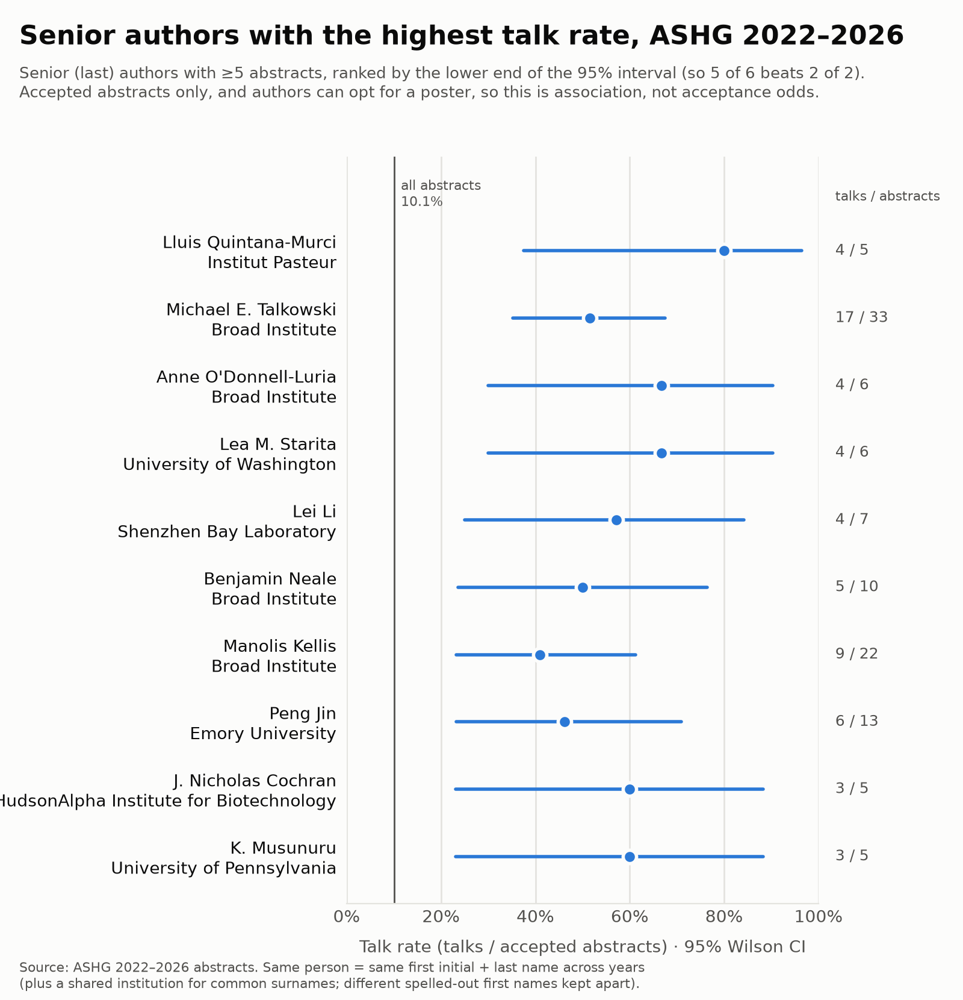
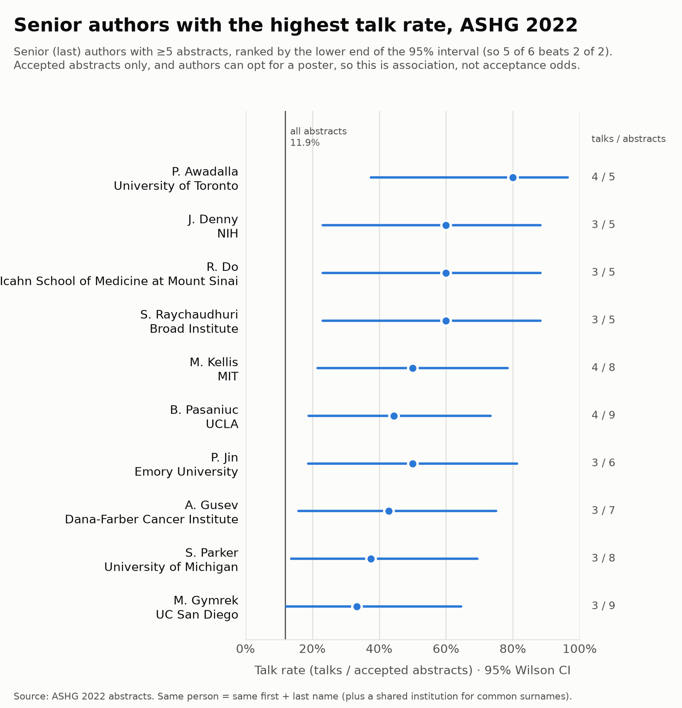
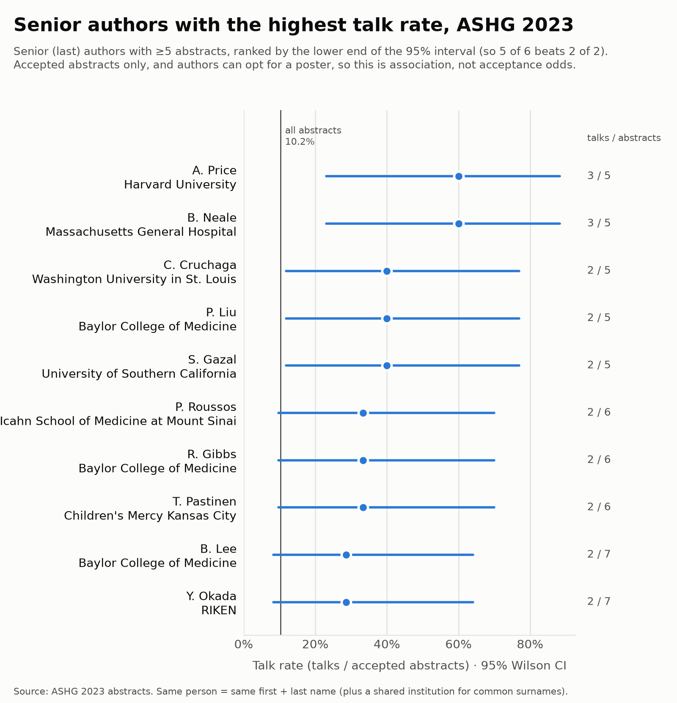
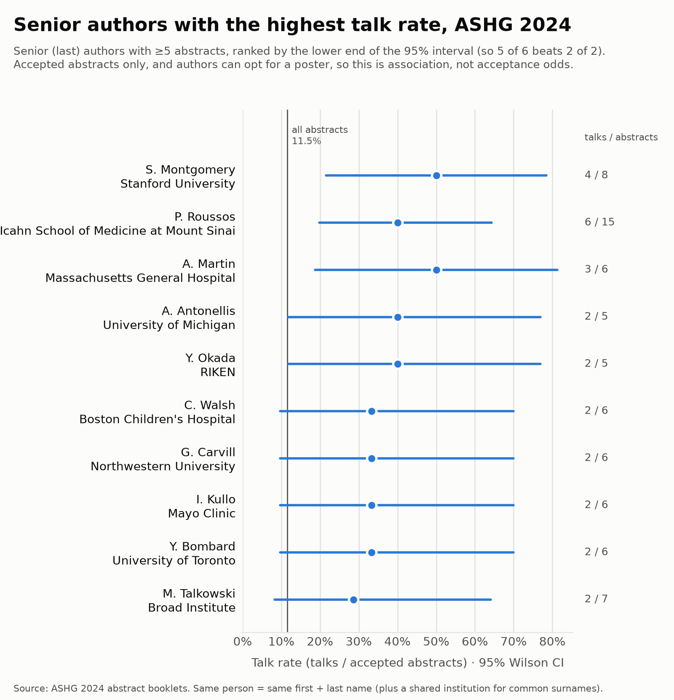
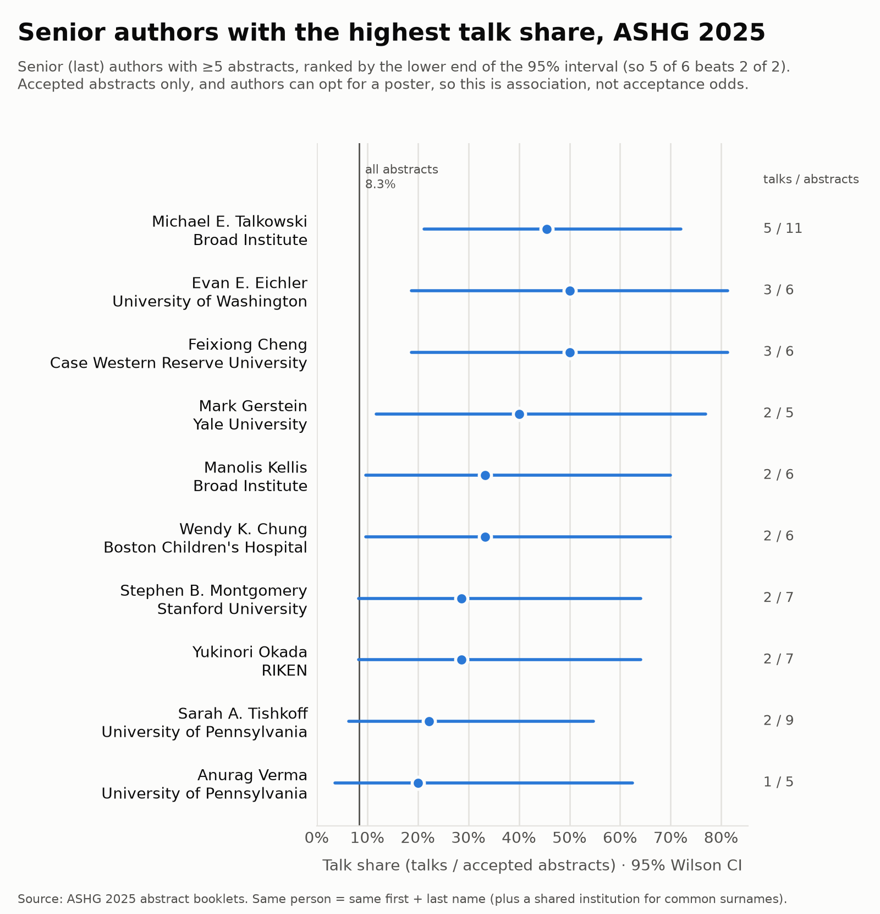
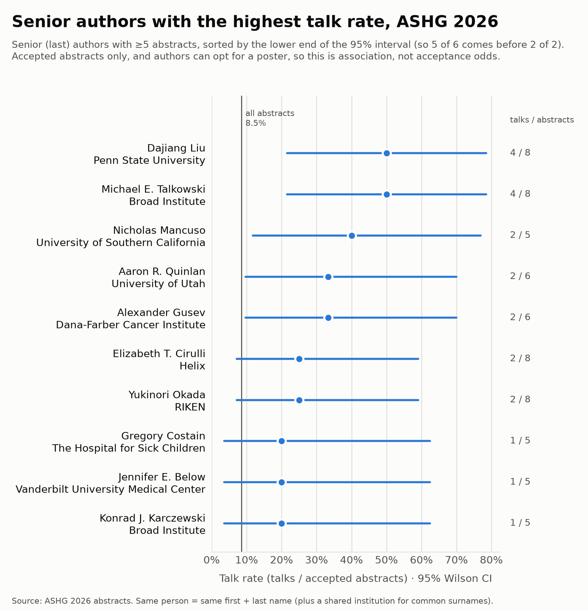

Senior authors with the highest talk rate
Senior (last) authors whose abstracts most consistently became talks.
Sorted by the lower end of the 95% Wilson interval, so 5 of 6 comes before 2 of 2. Within a year the same person is the same first + last name (plus a shared institution for common surnames).
Not a measure of anyone's work. This is how often abstracts with a given last author became talks. The last author is usually, but not always, the senior author (co-senior authors, consortia and field conventions differ), and the rate reflects a group's submissions and poster requests. Names are matched automatically, so one person can be split in two or two people merged. The intervals overlap heavily, so the order within a list means little.
All years · 2022–2026
Senior authors with at least 5 abstracts over all years. The 2022–2024 booklets give only initials, so across years the same person is the same first initial + last name; for common surnames they must also share an institution, and two different spelled-out first names (2025–2026) are kept apart.


| Senior author | Main institution | Abstracts | Talks | Talk rate | 95% CI |
|---|---|---|---|---|---|
| Lluis Quintana-Murci | Institut Pasteur | 5 | 4 | 80.0% | 37.5%–96.4% |
| Michael E. Talkowski | Broad Institute | 33 | 17 | 51.5% | 35.2%–67.5% |
| Anne O'Donnell-Luria | Broad Institute | 6 | 4 | 66.7% | 30.0%–90.3% |
| Lea M. Starita | University of Washington | 6 | 4 | 66.7% | 30.0%–90.3% |
| Lei Li | Shenzhen Bay Laboratory | 7 | 4 | 57.1% | 25.1%–84.2% |
| Benjamin Neale | Broad Institute | 10 | 5 | 50.0% | 23.7%–76.3% |
| Manolis Kellis | Broad Institute | 22 | 9 | 40.9% | 23.3%–61.3% |
| Peng Jin | Emory University | 13 | 6 | 46.2% | 23.2%–70.9% |
| J. Nicholas Cochran | HudsonAlpha Institute for Biotechnology | 5 | 3 | 60.0% | 23.1%–88.2% |
| K. Musunuru | University of Pennsylvania | 5 | 3 | 60.0% | 23.1%–88.2% |
ASHG 2022 · Los Angeles
Senior authors with at least 5 abstracts that year; the 2022 booklet gives only initials.


| Senior author | Main institution | Abstracts | Talks | Talk rate | 95% CI |
|---|---|---|---|---|---|
| P. Awadalla | University of Toronto | 5 | 4 | 80.0% | 37.5%–96.4% |
| J. Denny | NIH | 5 | 3 | 60.0% | 23.1%–88.2% |
| R. Do | Icahn School of Medicine at Mount Sinai | 5 | 3 | 60.0% | 23.1%–88.2% |
| S. Raychaudhuri | Broad Institute | 5 | 3 | 60.0% | 23.1%–88.2% |
| M. Kellis | MIT | 8 | 4 | 50.0% | 21.5%–78.5% |
| B. Pasaniuc | UCLA | 9 | 4 | 44.4% | 18.9%–73.3% |
| P. Jin | Emory University | 6 | 3 | 50.0% | 18.8%–81.2% |
| A. Gusev | Dana-Farber Cancer Institute | 7 | 3 | 42.9% | 15.8%–75.0% |
| S. Parker | University of Michigan | 8 | 3 | 37.5% | 13.7%–69.4% |
| M. Gymrek | UC San Diego | 9 | 3 | 33.3% | 12.1%–64.6% |
ASHG 2023 · Washington, DC
Senior authors with at least 5 abstracts that year; the 2023 booklet gives only initials.


| Senior author | Main institution | Abstracts | Talks | Talk rate | 95% CI |
|---|---|---|---|---|---|
| A. Price | Harvard University | 5 | 3 | 60.0% | 23.1%–88.2% |
| B. Neale | Massachusetts General Hospital | 5 | 3 | 60.0% | 23.1%–88.2% |
| C. Cruchaga | Washington University in St. Louis | 5 | 2 | 40.0% | 11.8%–76.9% |
| P. Liu | Baylor College of Medicine | 5 | 2 | 40.0% | 11.8%–76.9% |
| S. Gazal | University of Southern California | 5 | 2 | 40.0% | 11.8%–76.9% |
| P. Roussos | Icahn School of Medicine at Mount Sinai | 6 | 2 | 33.3% | 9.7%–70.0% |
| R. Gibbs | Baylor College of Medicine | 6 | 2 | 33.3% | 9.7%–70.0% |
| T. Pastinen | Children's Mercy Kansas City | 6 | 2 | 33.3% | 9.7%–70.0% |
| B. Lee | Baylor College of Medicine | 7 | 2 | 28.6% | 8.2%–64.1% |
| Y. Okada | RIKEN | 7 | 2 | 28.6% | 8.2%–64.1% |
ASHG 2024 · Denver
Senior authors with at least 5 abstracts that year; the 2024 booklet gives only initials.


| Senior author | Main institution | Abstracts | Talks | Talk rate | 95% CI |
|---|---|---|---|---|---|
| S. Montgomery | Stanford University | 8 | 4 | 50.0% | 21.5%–78.5% |
| P. Roussos | Icahn School of Medicine at Mount Sinai | 15 | 6 | 40.0% | 19.8%–64.2% |
| A. Martin | Massachusetts General Hospital | 6 | 3 | 50.0% | 18.8%–81.2% |
| A. Antonellis | University of Michigan | 5 | 2 | 40.0% | 11.8%–76.9% |
| Y. Okada | RIKEN | 5 | 2 | 40.0% | 11.8%–76.9% |
| C. Walsh | Boston Children's Hospital | 6 | 2 | 33.3% | 9.7%–70.0% |
| G. Carvill | Northwestern University | 6 | 2 | 33.3% | 9.7%–70.0% |
| I. Kullo | Mayo Clinic | 6 | 2 | 33.3% | 9.7%–70.0% |
| Y. Bombard | University of Toronto | 6 | 2 | 33.3% | 9.7%–70.0% |
| M. Talkowski | Broad Institute | 7 | 2 | 28.6% | 8.2%–64.1% |
ASHG 2025 · Boston
Senior authors with at least 5 abstracts that year.


| Senior author | Main institution | Abstracts | Talks | Talk rate | 95% CI |
|---|---|---|---|---|---|
| Michael E. Talkowski | Broad Institute | 11 | 5 | 45.5% | 21.3%–72.0% |
| Evan E. Eichler | University of Washington | 6 | 3 | 50.0% | 18.8%–81.2% |
| Feixiong Cheng | Case Western Reserve University | 6 | 3 | 50.0% | 18.8%–81.2% |
| Mark Gerstein | Yale University | 5 | 2 | 40.0% | 11.8%–76.9% |
| Manolis Kellis | Broad Institute | 6 | 2 | 33.3% | 9.7%–70.0% |
| Wendy K. Chung | Boston Children's Hospital | 6 | 2 | 33.3% | 9.7%–70.0% |
| Stephen B. Montgomery | Stanford University | 7 | 2 | 28.6% | 8.2%–64.1% |
| Yukinori Okada | RIKEN | 7 | 2 | 28.6% | 8.2%–64.1% |
| Sarah A. Tishkoff | University of Pennsylvania | 9 | 2 | 22.2% | 6.3%–54.7% |
| Anurag Verma | University of Pennsylvania | 5 | 1 | 20.0% | 3.6%–62.5% |
ASHG 2026 · Montreal
Senior authors with at least 5 abstracts that year.


| Senior author | Main institution | Abstracts | Talks | Talk rate | 95% CI |
|---|---|---|---|---|---|
| Dajiang Liu | Penn State University | 8 | 4 | 50.0% | 21.5%–78.5% |
| Michael E. Talkowski | Broad Institute | 8 | 4 | 50.0% | 21.5%–78.5% |
| Nicholas Mancuso | University of Southern California | 5 | 2 | 40.0% | 11.8%–76.9% |
| Aaron R. Quinlan | University of Utah | 6 | 2 | 33.3% | 9.7%–70.0% |
| Alexander Gusev | Dana-Farber Cancer Institute | 6 | 2 | 33.3% | 9.7%–70.0% |
| Elizabeth T. Cirulli | Helix | 8 | 2 | 25.0% | 7.1%–59.1% |
| Yukinori Okada | RIKEN | 8 | 2 | 25.0% | 7.1%–59.1% |
| Gregory Costain | The Hospital for Sick Children | 5 | 1 | 20.0% | 3.6%–62.5% |
| Jennifer E. Below | Vanderbilt University Medical Center | 5 | 1 | 20.0% | 3.6%–62.5% |
| Konrad J. Karczewski | Broad Institute | 5 | 1 | 20.0% | 3.6%–62.5% |